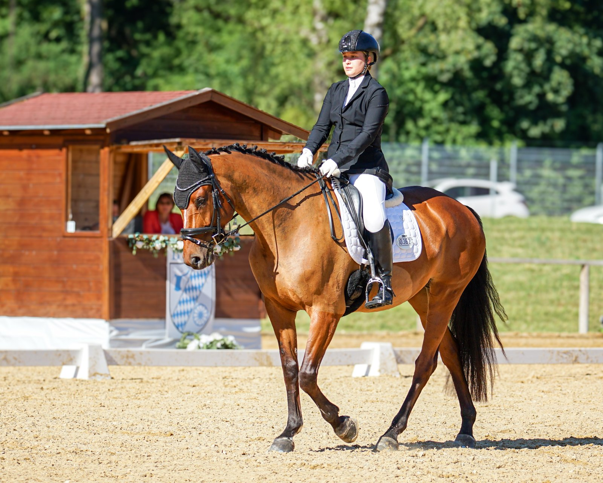

Wer mir auf TikTok zusieht
Quelle: TikTok, Zuschauer*innen, letzte 28 Tage, Stand: 25.10.2026. DACH und 18–34 Jahre sind aus den abgelesenen Anteilen zusammengezählt.

Was ich anbiete
Produktion von Foto- und Videomaterial für Ihre eigenen Kanäle: Reels, TikTok-Videos, Produktvorstellungen und Bildstrecken aus dem echten Turnier- und Stallalltag. Dazu Beiträge auf meinen eigenen Kanälen und längerfristige Zusammenarbeit über mehrere Monate.
Preise auf AnfrageErfolge
Sportlich nachprüfbar sind ein dritter Platz bei der Bayerischen Meisterschaft 2026 in Grade III und ein dritter Platz zusammen mit meiner Teampartnerin im Finale des Para-Deux-Cups 2026.
Mein Publikum
Quelle: TikTok, Zuschauer*innen, letzte 28 Tage, Stand: 25.10.2026. DACH und 18–34 Jahre sind aus den abgelesenen Anteilen zusammengezählt.
Kanäle
TikTok
Follower 10.713 | Quelle: TikTok, Stand: 25.10.2026
Aufrufe je Beitrag (Median) 1.556 | 48 von 48 Beiträgen vom 22.08.2026 bis 11.10.2026, ohne Stories · Quelle: TikTok, Stand: 25.10.2026
Reichweite je Beitrag (Median) 1.264 erreichte Konten | 48 von 48 Beiträgen vom 22.08.2026 bis 11.10.2026, ohne Stories · Quelle: TikTok, Stand: 25.10.2026
Follower 6.855 | Quelle: Instagram, Stand: 25.10.2026
Aufrufe je Beitrag (Median) 1.387 | 34 von 34 Beiträgen vom 22.08.2026 bis 11.10.2026, ohne Stories · Quelle: Instagram, Stand: 25.10.2026
Reichweite je Beitrag (Median) 878 erreichte Konten | 34 von 34 Beiträgen vom 22.08.2026 bis 11.10.2026, ohne Stories · Quelle: Instagram, Stand: 25.10.2026
Instagram liefert keine Herkunft der Zuschauer – die Anteile weiter oben gelten für TikTok.
Je Plattform, nicht zusammengezählt – dieselbe Person kann mehreren Kanälen folgen. Median: Die Hälfte der Beiträge lag darüber, die Hälfte darunter. Gezählt sind Aufrufe und erreichte Konten bis zum jeweiligen Stand.